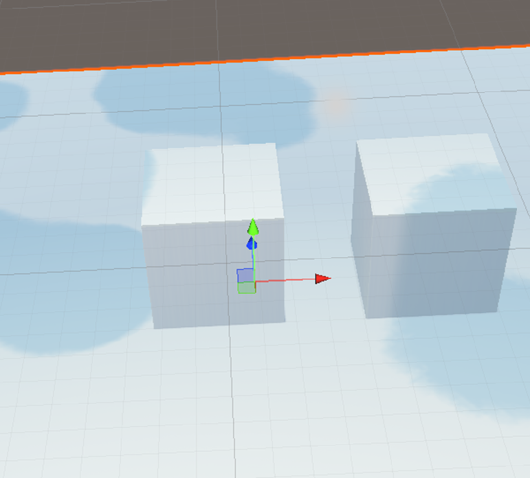
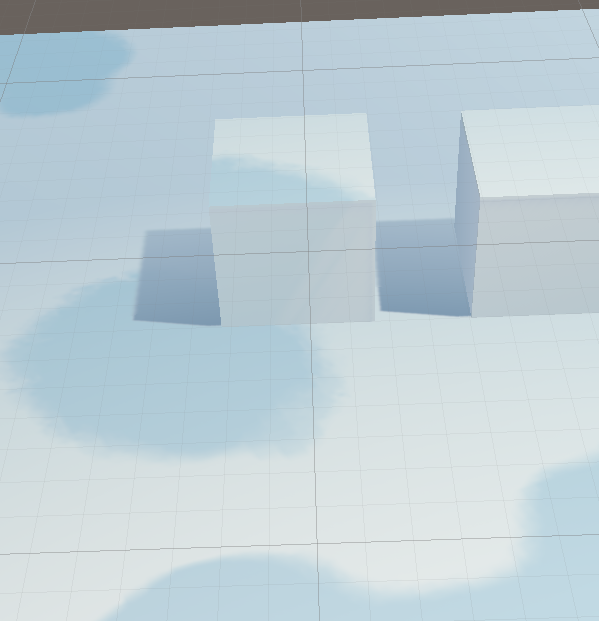

一些能实现动态云影效果的方案。
几种云影方案的比较和实现
当游戏中存在天气系统的时候，经常会出现对地面的云影需求，思考了一些云影实现的方案，在此提出。
后处理云影
通过拿到屏幕深度这张贴图，可以还原出屏幕中每个位置的坐标，通过偏导数ddy ddy函数可以还原世界坐标法线。（当然如果你的项目中有DepthNormal Pass那就当我什么都没说）
通过深度信息和视线方向重建世界坐标，完成从屏幕坐标到世界坐标的映射。
映射完成后可以利用重建得到的世界坐标，进行云影贴图效果的采样。
对于比较简单和固定的视角，我们可以直接利用世界坐标的xz方向，进行云影移动的采样，但是这样采样的结果是正投云影，即所有竖直方向上的影子都是拉伸的。在现实中，这显然是很不科学的，因为很少存在太阳垂直射向地面的效果，基本一直是斜射的。

解决拉伸
对于云影，其实我们需要云影的投射方向和光照的方向相同即可，因此我们直接在直射光的光照空间里进行采样就行。这样采样的结果符合物理直觉，也不会在建筑上产生拉伸。
unity拥有内置的世界空间转直射光光照空间的矩阵_MainLightWorldToLight，利用这个矩阵可以将世界空间下的坐标转为光照空间下的坐标，而且在光照方向进行变换的时候，云影可以进行同步的变化。
1 | float2 positionLS = mul(_MainLightWorldToLight, float4(poistionWS, 1)).xy; |
1 |
|

lightCookie
直接利用内置的LightCookie功能进行云影效果的制作。
想要动态的云影飘动效果，可以用特定的关键字在管线中改写LightCookie采样的这部分，这种方式的消耗比较小，也可以使用Unity提供的CustomRenderTexture来实现动态的采样
CustomRenderTexture
CustomRenderTexture类是对RenderTexture类的一个扩充。我们可以使用Shader来实时地更新纹理，将我们需要的信息保存在纹理中，以方便使用。这一技术可以用来进行很多复杂的模拟，比如：腐蚀、水面产生的涟漪、刚体表面的粘稠流体（血液、熔岩）等等。
将云影的动态移动和随着天气变化变大变小的效果加入该Shader中，就能得到light Cookie+动态云影的效果。